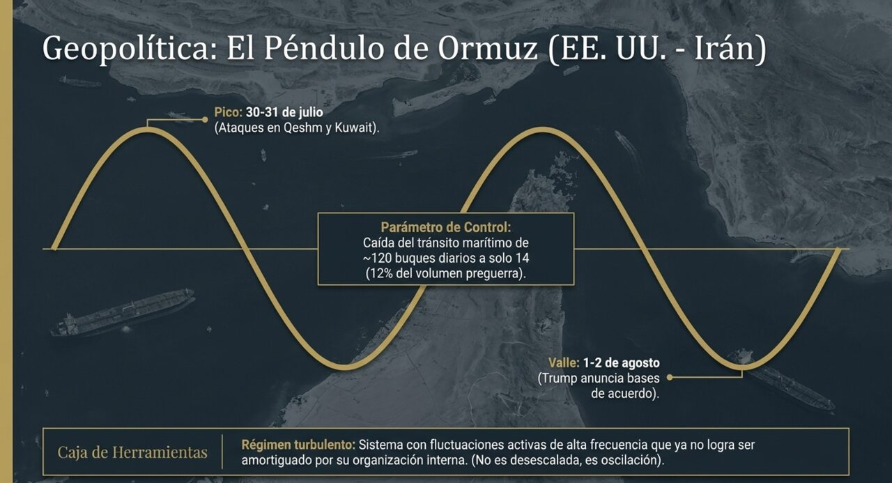
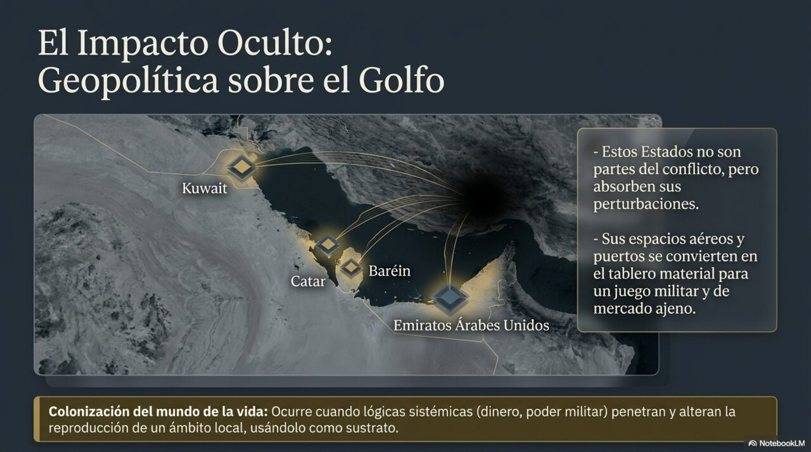

El péndulo de Ormuz: cinco meses de guerra que ya no escala, oscila
Entre el 8 de julio y el 2 de agosto, el conflicto Estados Unidos–Irán alternó al menos tres ciclos completos de bombardeo y anuncio de acuerdo. El estrecho pasó de cierre casi total a promesa de «apertura inmediata».


Hechos verificados
La guerra iniciada el 28 de febrero de 2026 con bombardeos aéreos conjuntos de Estados Unidos e Israel sobre ciudades iraníes cumplió cinco meses durante esta ventana [DC]. En respuesta al ataque inicial, Irán lanzó misiles y drones contra Israel y contra bases estadounidenses en Baréin, Kuwait, Catar, Emiratos Árabes Unidos, Arabia Saudita, Jordania e Irak, e impuso un cierre selectivo del estrecho de Ormuz [DC].
Dentro de la ventana analizada, la secuencia documentada es la siguiente. A mediados de julio la escalada se intensificó por seis días consecutivos, ampliando los blancos hacia puentes e instalaciones energéticas, con cierre prácticamente total de Ormuz [DC]. El 27 de julio, Trump ordenó pausar los bombardeos tras trece días de ataques para negociar un acuerdo; la cancillería iraní negó que existieran conversaciones [DC]. El 28 de julio el viceministro de Exteriores iraní, Kazem Gharibabadi, declaró en televisión iraní que Irán no había presentado ninguna solicitud de negociación en los últimos dieciséis o diecisiete días, contradiciendo la afirmación de Trump de que Irán estaba «deseando negociar» [DC].
El jueves 30 de julio Estados Unidos bombardeó la isla de Qeshm; Irán respondió atacando con drones posiciones estadounidenses en Kuwait [DC]. El sábado 1 de agosto Trump anunció que cancelaba un ataque planeado contra Irán citando avances en las conversaciones, y el domingo 2 afirmó haber alcanzado «las bases de un acuerdo» que incluiría la «apertura inmediata y completa» del estrecho [DC]. Ese mismo fin de semana, un petrolero fue alcanzado por un proyectil no identificado cerca de la entrada de Ormuz frente a la costa de Omán, según la Dirección de Operaciones Marítimas del Reino Unido, y las fuerzas armadas kuwaitíes interceptaron amenazas de drones en su espacio aéreo [DC].
Sobre el costo humano: UNICEF comunicó que en los últimos cinco meses más de 4.000 niños han muerto o resultado heridos en seis países de Oriente Medio, más de 2.500 de ellos en Irán, con 386 muertos y 2.117 heridos [DC]. El Pentágono actualizó su base de datos de bajas registrando más de 140 heridos adicionales y restituyendo la cifra de cuatro soldados muertos por ataques iraníes [DC].
Contexto
Esta guerra fue precedida por la Guerra de los Doce Días de junio de 2025 y por las protestas iraníes de 2025–2026. En las semanas anteriores al ataque inicial, Estados Unidos negociaba con Irán en Ginebra mientras reforzaba su presencia aérea y naval en la región. El propósito declarado de los bombardeos de febrero nunca fue clarificado oficialmente [DC]. La secuencia «negociar mientras se despliega» que precedió al 28 de febrero es exactamente la que se repite ahora en escala menor —de ahí la desconfianza estructural entre las partes.
| Afirmación | Estatus | Proceso que la genera |
|---|---|---|
| Existió un intercambio de golpes documentado (Qeshm ↔ Kuwait) el 30–31 de julio | [DC] | Reivindicaciones oficiales de ambas partes, coincidentes en el hecho aunque no en su justificación |
| Trump afirmó haber alcanzado «las bases de un acuerdo» con apertura de Ormuz | [DC] (como declaración) | Declaración presidencial reproducida por múltiples medios. El contenido del acuerdo no está verificado |
| Existe efectivamente un acuerdo bilateral en curso | [IP] débil | Fuente única e interesada, contradicha por la contraparte cinco días antes. Sostiene inferencia sobre contactos, no sobre acuerdo |
| Irán no ha solicitado negociaciones en las últimas dos semanas y media | [Int] | Declaración de Gharibabadi. Compatible con la existencia de contactos vía intermediarios, que él no niega explícitamente |
| El anuncio del acuerdo funciona como instrumento de gestión de la escalada más que como cierre del conflicto | [H] | Explicación que integra mejor el patrón repetido (anuncio → silencio → bombardeo) que la hipótesis rival de negociación de buena fe. Contrastable en 10–15 días |
| Cifras de UNICEF sobre menores muertos y heridos | [DC] | Organismo de Naciones Unidas con metodología declarada, sin contraparte que las dispute |
Nota explicacionista. Frente a la evidencia disponible compiten dos explicaciones. La primera: hay una negociación real y accidentada. La segunda: los anuncios de acuerdo son un recurso de gestión doméstica y de mercado, y la negociación es marginal. La segunda explica mejor tres rasgos que la primera deja sin cubrir: la negación sistemática de la contraparte, la ausencia de mediador declarado y el hecho de que cada anuncio precede a un intervalo corto de recuperación de posiciones militares. No es concluyente —es la mejor explicación disponible hoy, revisable.
Declaración de nivel (Paso 0). El análisis opera en el nivel comunicativo-institucional, con acoplamiento al nivel energético-material. Herramienta principal: Habermas (tensión sistema / mundo de la vida). Tipo de analogía: fuerte para los conceptos de régimen y bifurcación; literal para los flujos disipativos de hidrocarburos.
Parámetro de control declarado. El volumen de tránsito marítimo efectivo por Ormuz. Es medible, tiene línea de base (~120 cruces diarios preguerra), y su valor actual —al menos 14 buques comerciales en 24 horas al 29 de julio, es decir cerca del 12% del volumen previo— sitúa al sistema fuera de su régimen de reproducción normal. Sin declarar este parámetro, hablar de «bifurcación» sería metáfora.
Régimen. El sistema no está en escalada lineal ni en desescalada: está en oscilación de alta frecuencia dentro de un régimen turbulento. La distinción importa. Una escalada tiene dirección; una oscilación tiene amplitud. Lo que se observa desde el 8 de julio es un ciclo de amplitud sostenida y período decreciente: los intervalos entre bombardeo y anuncio de acuerdo se acortan. En términos ADD, esto es característico de un sistema cuyas fluctuaciones ya no son amortiguadas por su organización interna.
Clausura organizacional y acoplamiento. Ambos actores mantienen clausura operacional robusta: cada uno procesa las perturbaciones del otro según su propia lógica de legitimación interna. Trump necesita anunciar acuerdos; el liderazgo iraní necesita negar solicitudes de negociación. Ninguna de las dos operaciones responde a lo que el otro hizo: responde a lo que la propia organización requiere para sostenerse. Esto explica por qué las señales no convergen aunque los hechos sean compartidos.
Colonización del mundo de la vida. El concepto aplica con precisión al Golfo. Los Estados de Kuwait, Catar, Baréin y Emiratos no son partes del conflicto pero absorben sus perturbaciones: sus espacios aéreos, sus puertos y sus poblaciones son el sustrato material sobre el que se ejecuta una lógica sistémica —militar y de mercado— que no fue deliberada por ellos. La advertencia iraní de que los Estados del Golfo que cooperen con Washington corren riesgo de «quemarse en las llamas de la guerra» es la formulación explícita de esa captura.
Posición sistémica. Ormuz no es un accidente geográfico: es un punto de estrangulamiento en la cadena mercantil que sostiene la reproducción energética del centro y de la semiperiferia asiática. Quien controla el flujo no controla un recurso, controla una condición de posibilidad de la acumulación ajena. Esto explica por qué la disputa persiste aun cuando ninguno de los dos actores obtiene ventaja militar decisiva.
Ciclo de acumulación (Arrighi). La reiteración de anuncios que mueven el precio del crudo antes de mover la posición militar es coherente con la fase de expansión financiera del ciclo hegemónico estadounidense: el rendimiento de la señal supera al de la operación. No es una acusación de manipulación —es una observación sobre qué tipo de instrumento resulta rentable en esta fase del ciclo.
Límite temporal declarado. El marco de sistemas-mundo opera en escalas de décadas. No predice el desenlace de una semana. Su aporte aquí es explicar por qué el estrangulamiento persiste, no cuándo cede.
Costa Rica es un nodo semiperiférico con acoplamiento energético total y sin capacidad de amortiguación estructural: importa el 100% de los hidrocarburos que consume y no tiene refinación operativa propia. La oscilación de Ormuz no llega al país como noticia, llega como precio. En junio se requirieron 340 millones de dólares para importar hidrocarburos —el monto mensual más alto en al menos año y medio [DC].
La vulnerabilidad específica no es el nivel del precio sino su varianza. El mecanismo tarifario costarricense —RECOPE propone, ARESEP aprueba, con ventana de estudio mensual retrospectiva— está diseñado para transmitir tendencias, no oscilaciones de alta frecuencia. Un régimen de oscilación produce entonces un desfase sistemático entre el precio internacional y el precio doméstico, con un costo distributivo que recae sobre los hogares de menor ingreso, que gastan una proporción mayor de su presupuesto en transporte.
Oportunidad declarable: la ventana de tipo de cambio históricamente bajo (¢450,81 en Monex el 20 de julio, mínimo desde el inicio de la serie del BCCR en 2007) amortigua parcialmente el choque en colones. Es un amortiguador coyuntural, no estructural.